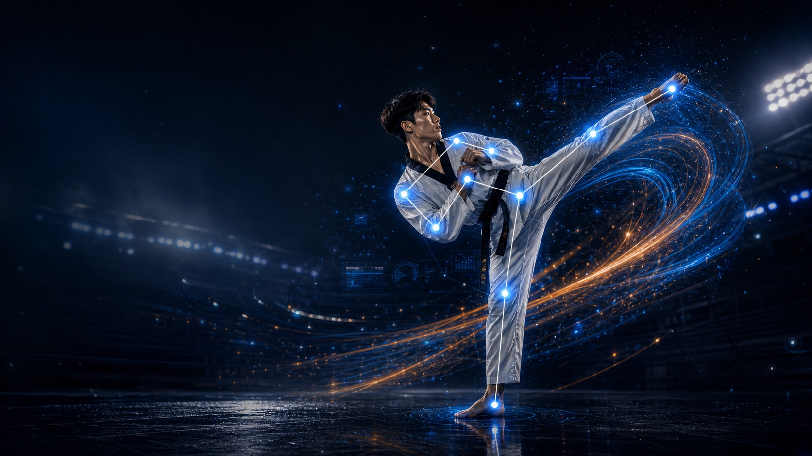
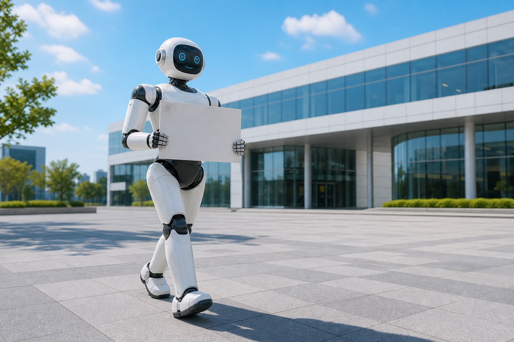
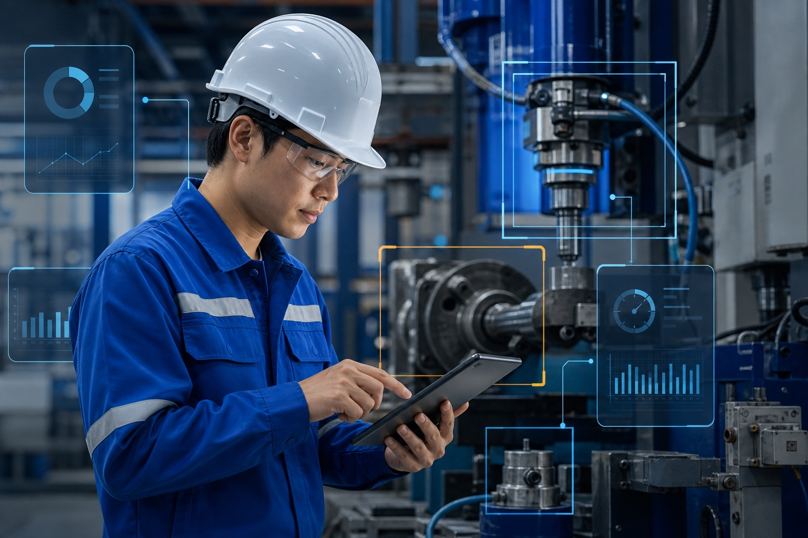
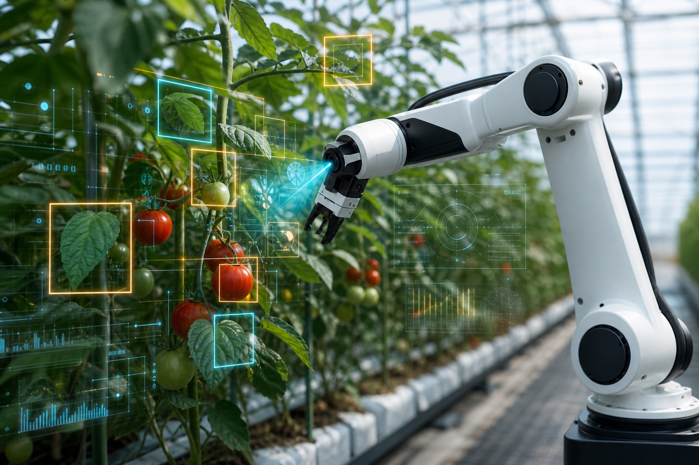

Vision Detection
카메라 영상에서 사람, 장비, 제품, 환경 요소를 자동으로 인식합니다.

Industrial Vision AI
객체 인식, 이상 상황 감지, 품질 검사, 운영 데이터 분석을 하나의 흐름으로 연결해 산업 현장의 판단 속도를 높입니다.
카메라 영상에서 사람, 장비, 제품, 환경 요소를 자동으로 인식합니다.
공정 흐름과 설비 상태를 분석해 이상 징후와 운영 병목을 파악합니다.
분석 결과를 지표, 알림, 리포트로 제공해 운영 의사결정을 지원합니다.
AI 비전 기술을 기반으로 제조, 물류, 안전, 리테일, 농업 등 다양한 현장의 데이터를 실행 가능한 인사이트로 전환합니다.
View More →고속 영상 기반 패턴 분석
디지털 콘텐츠와 공간 데이터 분석
작업 안전과 설비 이상 감지
생육 상태와 품질 자동 분석
로봇·장비 상태 인식

뉴스
